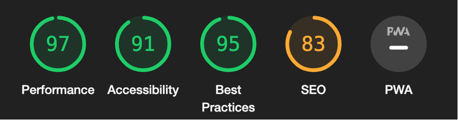
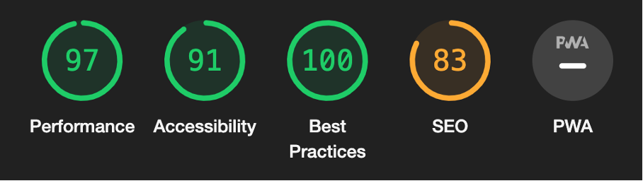
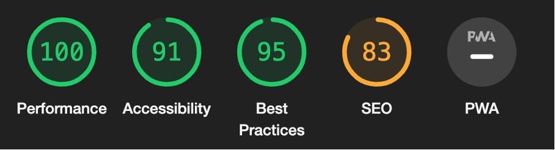
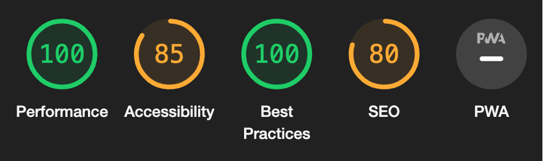
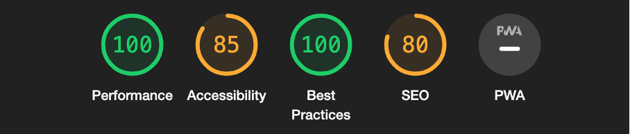
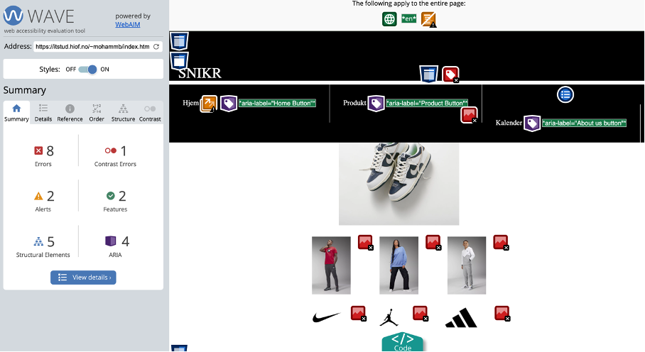
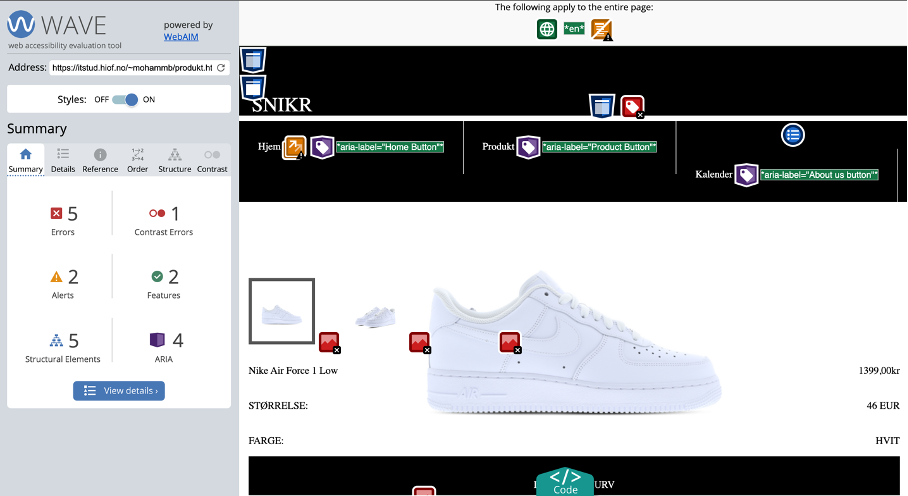
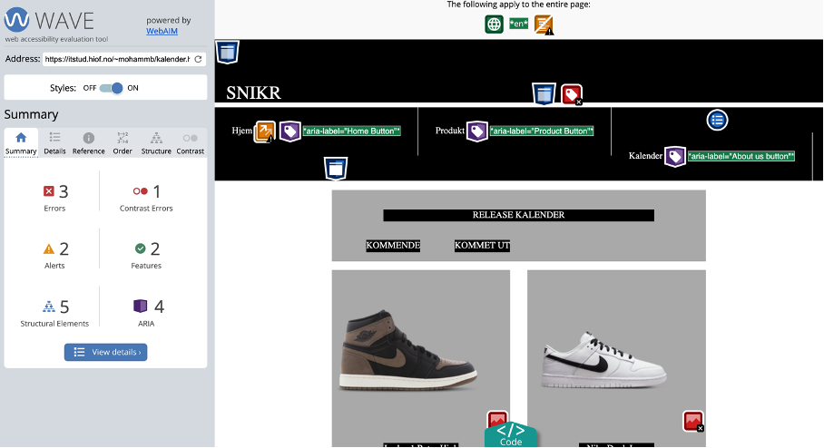
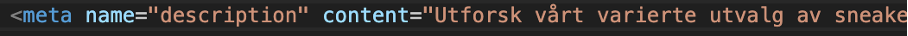
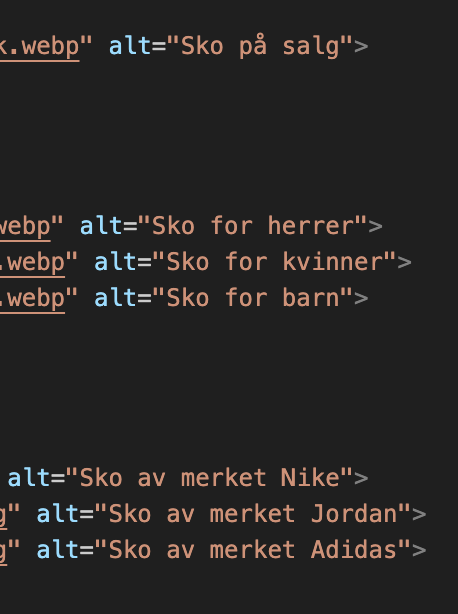

Nøkkelord
- Sneakers Dette er fordi sko av den typen jeg selger blir som oftest referert til som Sneakers
- Jordan
- Nike
- Adidas Disse tre er de mest populære skoene som selges på nettsiden min, når folk søker opp disse merkene for å kjøpe dem vil nettsiden sansynligvis komme opp
- Skobutikk Dette er for folk som pleier å søke etter en skobutikk å handle på. Dette er for folk som som regel ikke søker opp skoene de er ute etter men kun en skobutikk de kan se etter sko i
- Streetwear Det siste nøkkelordet går i hånd med det første og er mer et ord som brukes av folk i "Sneaker kulturen". i likhet med nøkkelordet "Sneaker", er begge disse ikke tradisjonelle ord i ordboken. De er heller ord som er opfunnet for denne typen sko
SEO & UU
SEO analyse for mobil:
Hjemmeside:
Produkt:
Kalender:
SEO analyse for desktop:
Hjemmeside:

Produkt:
Kalender:
UU analyse:
Hjemmeside:
Produkt:
Kalender:
Endringer foreslått av ChatGPT
Her er en tabell som sannemlikner endringer foreslått av de ulike analysene:
X = ble foreslått
O = ble ikke foreslått
| Likheter | ChatGPT | Lighthouse | Webaim |
|---|---|---|---|
| Alt tekst for bilder | X | X | X |
| Meta beskrivelse | X | X | X |
| Optimalisert design | X | O | O |
Endringer:
Det av de få problemene med analysene jeg fikk som var gjentagende var mangel på bilde beskrivelse og mangel på meta beskrivelse i hver av sidene.Gjennom endringene jeg gjorde som var å legge til bilde og meta beskrivelse, fikk jeg bedret resultatene.
Jeg fikk mye bedre score på lighthouse og jeg fikk fjernet 13 errors i UU analysen som et resultat av endringene jeg gjorde. 
